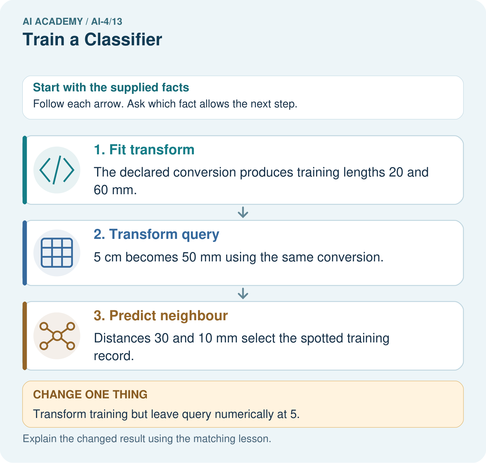

AI Academy · Level 4 · Grade 9 · Week 13 · Workbook
Train a Classifier
Learn to understand, design, build, test and explain AI systems responsibly.
Project: Responsible Plant Classifier
Workbook · 1 of 25
Recall and choose your starting point
Try the recall before opening notes. Then use a different colour or a labelled second line to correct your explanation.
Nearest Neighbors
Without opening the old lesson, explain one key idea from Nearest Neighbors. Give an example and a mistake that the idea helps you avoid.
Baselines First
Without opening the old lesson, explain one key idea from Baselines First. Give an example and a mistake that the idea helps you avoid.
Sampling and Intended Use
Without opening the old lesson, explain one key idea from Sampling and Intended Use. Give an example and a mistake that the idea helps you avoid.
Workbook · 2 of 25
Practise with fading help
Use W2: Trace and score the saved run for A reproducible classifier pipeline. Record the answer once; the lesson and workbook refer to the same attempt.
| Given inputs | Procedure I chose | Middle steps | Result and check |
|---|---|---|---|
Workbook · 3 of 25
Individual reasoning check
Use the worked case for A reproducible classifier pipeline. Proposed explanation: “A pipeline prevents every leak automatically”. Decide whether this explanation is supported. Point to the step or supplied fact that decides; explain your repair if needed.
Workbook · 4 of 25
Independent transfer case
Independent case: Build and trace a fresh fitted state
Use P (0,60) blocked, Q (20,20) clear, R (20,60) clear as new training rows. Fit the same pipeline. Predict validation queries (2,28),(18,56),(4,12) with references blocked,clear,blocked. Give fitted minima and ranges, transformed queries, selected IDs, predictions, accuracy and training-majority baseline.
Attempt this case before feedback. Record any help. Earlier examples below are further practice; a case already practised with feedback cannot establish fresh transfer.
Workbook · 5 of 25
Your learning target
Training: spots 0:H,2:H,4:S,6:S. Compare rules S if spots>=1,>=3,>=5. Choose by training accuracy, then predict held-out 1:H and 5:S without revising. Report both stages.
Workbook · 6 of 25
Solve the given case
Training is (0,H),(1,H),(4,S),(5,S). Candidate rule predicts S for spots>=3. Held-out cases are (2,H),(3,S).
Apply the rule and distinguish fitting from inference.
Show your trace, calculation or evidence
Workbook · 7 of 25
Check a changed case
A classifier fits on rows 1–80 and is evaluated on those same rows. Its accuracy is 100%. What additional evidence is needed before claiming generalization?
My independent answer and reason
Week 13 Test and reflect
Workbook · 8 of 25
Design a revealing test
Create a changed input, boundary case or missing-information case. Write the expected answer or safe response before testing.
| Test record | My evidence |
|---|---|
| Changed input or condition | |
| Expected answer or fallback | |
| Observed result | |
| Why the result occurred |
Workbook · 9 of 25
Project checkpoint
Train Plant Classifier v1 without opening the final test labels during model choice; save the experiment record.
The project change and evidence I will keep
Workbook · 10 of 25
Self check
I can explain the mechanism. I can show evidence. I can handle a changed case. I can name a limit. Mark each as not yet, with help or independently, and attach supporting work.
Teacher review ____________________ Next step ____________________
Workbook · 11 of 25
Transfer practice from the original programme
Training: spots 0:H,2:H,4:S,6:S. Compare rules S if spots>=1,>=3,>=5. Choose by training accuracy, then predict held-out 1:H and 5:S without revising. Report both stages.
Record support used: none, hint or teacher explanation.
Workbook · 12 of 25
W1 Separate fit predict and evaluate
List what fit learns or stores, what predict takes as input, and what evaluation compares. State where the validation reference labels belong.
Workbook · 13 of 25
W2 Trace and score the saved run
Give the IDs and labels printed for V1,V2,V3. Use references clear,blocked,clear to calculate accuracy and the training-majority baseline. Which error should repeat in an unchanged rerun?
Workbook · 14 of 25
W3 Repair an incomplete run record
A classmate saves only k=1 and a score of 2/3. Name the information needed to reproduce this run. Explain why the same score alone is insufficient.
Workbook · 15 of 25
W4 Build and trace a fresh fitted state
Use P (0,60) blocked, Q (20,20) clear, R (20,60) clear as new training rows. Fit the same pipeline. Predict validation queries (2,28),(18,56),(4,12) with references blocked,clear,blocked. Give fitted minima and ranges, transformed queries, selected IDs, predictions, accuracy and training-majority baseline.
Workbook · 16 of 25
W5 Diagnose pipeline misuse
Explain and repair three mistakes: predict receives an already scaled query; fit receives training plus validation rows; a query uses brightness before distance. Does repeating each mistaken run make it valid?
Workbook · 17 of 25
Searching candidate rules — W1 State the search before running it
Write the rule direction, equality behavior, candidate cutoffs and tie policy. Identify what humans supplied and what fitting selects.
Workbook · 18 of 25
Searching candidate rules — W2 Trace the training mistakes
List errors for cutoffs 3, 5 and 7 on the worked training rows. Identify the mistaken row for each imperfect candidate. Which cutoff is stored?
Workbook · 19 of 25
Searching candidate rules — W3 Audit the boundary and comparison
What happens at distance 5 if prediction uses < instead of <= with cutoff 5? Explain why the search uses a strict < for error counts even though prediction uses <= for distance.
Workbook · 20 of 25
Searching candidate rules — W4 Search and evaluate independently
New training rows are (1,blocked), (3,clear), (5,blocked), (7,clear). Try cutoffs 2,4,6, using the same direction and smaller-cutoff tie policy. Give every training error count and select a cutoff. Validation rows are (2,blocked), (4,blocked), (6,clear), (8,clear). List the selected rule’s predictions and score. Compare with the training-majority baseline using clear on ties.
Workbook · 21 of 25
Searching candidate rules — W5 Limit the claim
The worked rule fits training perfectly but ties the baseline on validation accuracy. Explain why neither result proves it is the best possible model. Name two details to keep in the experiment record.
Workbook · 22 of 25
Feedback, return check and learning record
| Evidence | My record |
|---|---|
| Worked alone / hint / model | |
| First step I repaired and why | |
| New case checked later; date and result | |
| What I can now explain without notes | |
| One remaining question |
Revisit this idea with your teacher after a delay. Familiarity is different from explaining and using it on a changed case.
Workbook · 23 of 25
Pictorial case practice: Train a Classifier
Separate a reproducible fitted pipeline from merely displaying predictions.
Toy training lengths are [2, 6] cm with labels [healthy, spotted]. Pipeline converts cm to mm, then uses k=1 absolute distance. Query is 5 cm.
All inputs and outcomes in this worked example are invented classroom data; no real model run is claimed.

Which pipeline record would help another team reproduce the result? Point to the relevant step in the picture, then write the changed result and the rule or evidence that supports it.
Support used: alone / hint / worked example. This record is practice evidence.
Project connection: For your Responsible Plant Classifier, save the input, procedure, observed result and limitation of this check. Label this worked example as practice; use a different, previously unreviewed case when checking independent understanding.
Workbook · 24 of 25
Project portfolio milestone
Project: Responsible Plant Classifier
Current milestone: Test changed cases. Keep normal, boundary and failure cases; compare expected and observed results.
For your Responsible Plant Classifier, save the input, procedure, observed result and limitation of this check. Label this worked example as practice; use a different, previously unreviewed case when checking independent understanding.
| Evidence to keep | My record |
|---|---|
| This week’s input and deciding step | |
| Prediction and actual result (or labelled paper trace) | |
| One change since the previous checkpoint and why | |
| One error or limit and the next test |
Workbook · 25 of 25
Supported practice and learning evidence
Use this supported practice once, in the browser or on paper. Keep the reserved independent assessment for a separate first attempt before teacher feedback.
Separate a reproducible fitted pipeline from merely displaying predictions.
Practice 1: explain the deciding evidence
Which labelled step matches this detail? Distances 30 and 10 mm select the spotted training record.
1. Predict neighbour
2. Fit transform
3. Transform query
Hint if needed: Read the steps in the pictorial case. Match the supplied detail to the stage that performs or records it.
After your attempt, compare with the supported explanation: Predict neighbour Distances 30 and 10 mm select the spotted training record. Read the picture in order. Distances 30 and 10 mm select the spotted training record. The arrows show which recorded input or intermediate result each decision uses. Explain the deciding step aloud before checking the changed case; pointing to the final answer alone does not show how it follows.
Practice 2: explain the deciding evidence
Changed-case practice: Transform training but leave query numerically at 5. Which conclusion is supported by the supplied facts?
1. Distances become 15 and 55, incorrectly selecting healthy.
2. We can decide the result without examining the changed input or the procedure.
3. This one example guarantees correct results for every future input.
Hint if needed: Use the changed condition and the deciding step in the pictorial trace. The answer must say what follows from those facts.
After your attempt, compare with the supported explanation: Distances become 15 and 55, incorrectly selecting healthy. The query is now compared in inconsistent units; the changed result is a pipeline defect.
Repair a missing building block
Review Nearest Neighbors (ai-4/12). Goal: Compute absolute distances and rank training neighbours. Short practice: Why is the k=1 outcome at length5 not uniquely determined without a tie rule? Point to the relevant step in the picture, then write the changed result and the rule or evidence that supports it.. Return to this week and explain what you changed.
Review Baselines First (ai-4/10). Goal: Fit a majority label baseline using training labels only. Short practice: Can the candidate’s training accuracy replace this validation comparison? Point to the relevant step in the picture, then write the changed result and the rule or evidence that supports it.. Return to this week and explain what you changed.
Review Sampling and Intended Use (ai-4/7). Goal: Inspect row meaning missing values and repeated records. Short practice: Which collection would address the intended-use gap most directly? Point to the relevant step in the picture, then write the changed result and the rule or evidence that supports it.. Return to this week and explain what you changed.
Predict, run and debug
The browser lab lets you edit the supported Python examples already included in this lesson. Predict first, run, inspect the actual output or error, change one input, then run again. Keep code, predictions, actual results and a reasoned revision together. On paper, label your result as a trace rather than an execution.
Keep your completed work
Use Download completed work in the hosted lesson to export your answers, reflections, practice feedback and code-run evidence. Open the HTML copy to read or print it. Drafts stay in this browser when storage is available; clear drafts on a shared device.